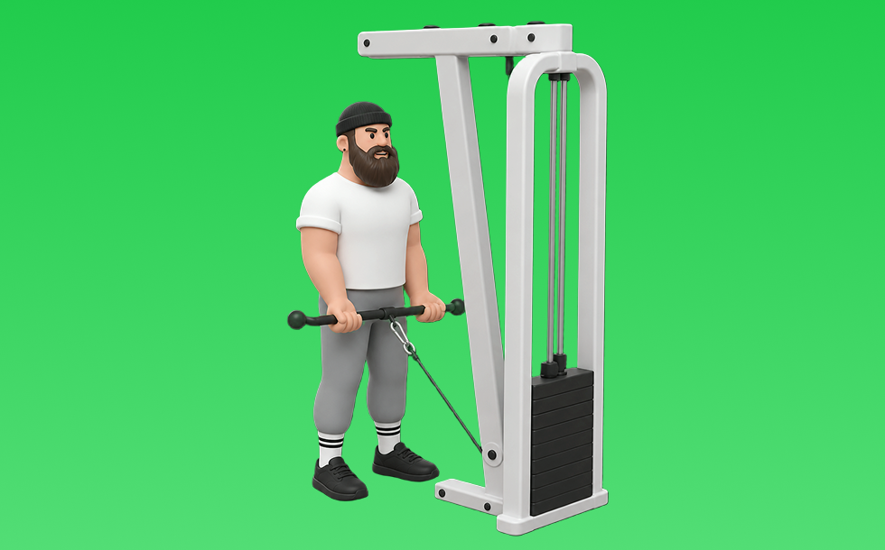

ケーブルカール

ケーブルカールとは、ケーブルを使って「膝を曲げる」動作で腕（上腕二頭筋）、前腕を鍛える種目です。可動域全体で張力が抜けにくいのが特徴で、かかとを引き寄せて収縮し、ゆっくり戻す動作を繰り返します。腕の太さづくりや引く力の補強が期待できます。
- 対象部位
- 腕
- 器具
- ケーブル
- 記録形式
- 重量・回数
- 別名
- ロープカール
YouTube動画
-
【初心者】ケーブルカールの効果的なやり方 | ケーブルカールのバリエーション【ビーレジェンド プロテイン】
-
【解説】上からのケーブルアームカール！腕トレのバリエーションを足したいあなたへ！
-
【ケーブルマシン】女性が知りたいお尻・二の腕・背中 使い方4選！
-
腕を太くする筋トレ 【ケーブルアームカール】ケーブルを使った腕トレで『マッチョな力こぶがある腕』を目指そう！
-
【筋トレ悪いフォーム解説】アームカールで上腕二頭筋にバチっと効かせ、手首の負担を減らすコツ！
-
エニタイムフィットネスのケーブルマシンで出来るおすすめ5種目を解説！【筋トレ初心者】
-
【ガチ腕5】ケーブルカールで絞り出す！！
-
【二頭筋のピークの高さをデザインする】ワンハンドケーブルカール。
-
【ケーブルカール】上腕二頭筋に効かせるコツ〜ロープ・チューブなどアタッチメントの種類も！
-
上腕二頭筋の筋肥大に最も良い種目は？【二頭筋のティアリスト】
-
ケーブルカール 完全版 【合戸孝二選手】
-
【筋トレ】ケーブルマシン完全解説!?肩/背中/腕/胸を鍛える最強おすすめ種目10選!?
YouTubeショート
-
【腕トレ】上腕二頭筋を鍛えるケーブルカールのやり方解説
-
腕のやり方🔥〜ケーブルプレスダウン基礎編〜 #筋トレ #筋肉 #筋肉社長 #腕トレ
-
【ケーブルハンマーカール】これ見るだけでフォーム攻略 #ダイエット #トレーニング #二の腕痩せ #二の腕引き締め #二の腕トレーニング
-
【ケーブルプレスダウンの正しいやり方】理想と間違い#仙台パーソナルジム#仙台ジム#tryve#TRYVE#トライヴ#筋トレ初心者#腕トレ#ボディメイク#ボディビル
-
最短で腕を太く！！！！ケーブルアームカールの解説🔥#腕トレ#マッチョ#筋トレ#ボディメイク
-
正しいケーブルカールのやり方
-
みなさんはワンハンドケーブルカールやってますか？持田選手とこんがりさんが上腕二頭筋に効くトレーニングをレクチャーしてくれました！#筋トレ #volix #腕トレ #ちょこっと惜しい #上腕二頭筋
-
【一撃で効かす】ケーブルカール「3つのポイント」
-
いつもやってるケーブルキックバック解説!!
-
みなさんはオーバーヘッドケーブルカールやってますか？持田選手がしっかり上腕二頭筋に効くトレーニングをレクチャーしてくれました#volix #腕トレ #ちょこっとおしい #volixgear
-
ケーブルカールよくあるミスと改善方法#GronG #グロング #筋トレ #フィットネス #上腕二頭筋トレ #アームカール #ケーブルカール
-
【よくある間違いケーブルプレスダウン】 #ダイエット #筋トレ #新座市 #志木市 #ケーブルプレスダウン
-
【二頭トレ解説】ケーブルハンマーカール #筋トレ解説 #二頭筋 #腕トレーニング
-
みんなはケーブルカールやる？
-
【よくある間違いケーブルハンマーカール】 #筋トレ #ダイエット #志木市 #新座市 #朝霞市 #パーソナルジム #大泉学園 #東久留米 #ケーブルハンマーカール
-
みなさんはケーブルハンマーカールやってますか？持田選手とこんがりさんが前腕に効くトレーニングをレクチャーしてくれました！#筋トレ #volix #前腕トレ #ちょこっと惜しい #上腕二頭筋
-
ケーブルカール（Cable Curl）のやり方とフォーム
-
今さら聞けないケーブルプッシュダウンのやり方説明してるで‼️#トレーニング #パーソナルトレーニング #フィットネス #筋トレ #プロテイン #ワークアウト #腕トレ #三頭筋
-
極太の二頭筋を作りたい人必見
-
このアームカールはやめろ！#shorts
-
持田選手にケーブルとダンベルを使用したハンマーカールについてレクチャーしていてもらいました！次はどの種目の解説をやってほしいかコメントしてね！#筋トレ #volix #トレーニング #ちょこっと惜しい
-
正しいケーブルプレスダウン4つのポイント #筋トレ
-
上腕二頭筋のおすすめ種目3つを紹介【筋トレ】
-
【腹筋トレ解説】ケーブルクランチ #筋トレ解説 #腹筋トレ #腹筋トレーニング
-
【アームカールの正しいやり方】理想と間違い#仙台パーソナルジム#仙台ジム#筋トレ初心者#筋トレ#ボディビル#ボディメイク#パーソナルトレーナー
-
正しいサイドレイズ4つのポイント #筋トレ
-
ケーブルカールのやり方｜二の腕（上腕二頭筋）に効かせる肘の位置 #筋トレ #Shorts
-
キックバックのやり方#初心者 #ジム #ダンベル
-
ケーブルカールで二頭筋をガチガチに効かせる裏技がこれ
-
こんなバーベルカールはやめろ！正しいフォーム解説 #筋トレ
-
【トレ解説】ケーブルアームカール🔥上腕二頭筋のトレーニングです！とにかく曲げ切ること！🔥#筋トレ #初心者 #ジム #トレーニング #解説動画 #ダイエット#初心者向け #筋肉#背中#ジム初心者
-
正しいラットプルダウン4つのポイント【筋トレ】
-
【誰でも簡単】メチャクチャ効くケーブルアームカールのやり方
-
ケーブルエクステションの正しい位置
-
山本義徳のダンベルカール重量 挙げれる人います？#shorts #youtubeshorts #筋トレ#山本義徳 #山岸秀匡 #valx #筋トレ
-
【筋トレ解説】ケーブルクロスオーバー下部 #筋トレ #筋トレ解説 #胸トレ
-
背中が成長しないラットプルダウン
動作方法
- 肘の位置を固定して構える
- 肘を軸にして持ち上げる
- ゆっくり下ろして負荷を保つ
動作ポイント
- 肘を前後に振りすぎない
- 手首を反らしすぎない
ワンポイントアドバイス
- 肘の位置を固定すると狙った部位に効きやすい
- 回数を急がず、下ろし動作を丁寧に行う
目的別回数設定
目的や体力に応じた一般的な目安です。無理のない範囲で調整してください。
- 筋力アップ
- 1〜5回
- 筋肥大
- 6〜12回
- 持久力アップ
- 13〜20回
YouTube動画について
動画はYouTubeの公開情報をもとに表示しています。内容は投稿者によるもので、Biggrによる監修ではありません。
アプリを入手
筋トレやトレーニングの記録はBiggrにお任せください。今すぐ無料で使い始められます。